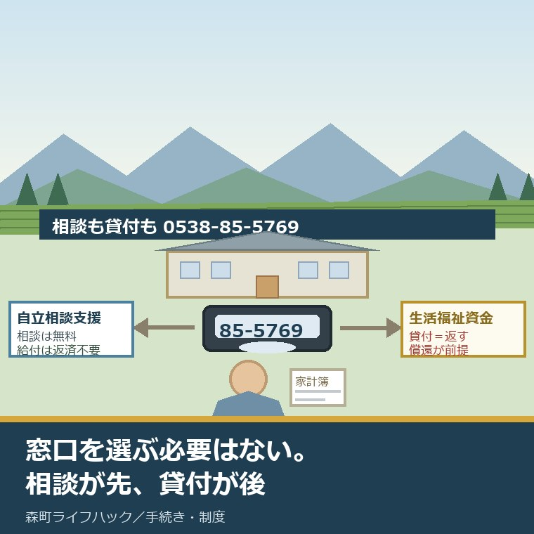
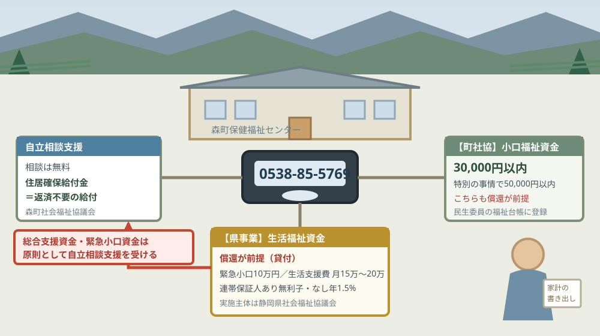
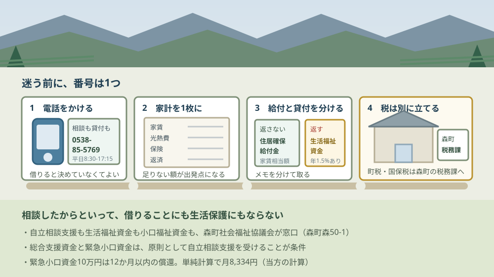

森町の生活困窮の相談窓口｜自立支援と貸付は同じ番号

この記事の要点
Q. 収入が減って生活費が苦しい。森町では相談の窓口と借りる窓口、どちらに行けばいいですか。
A. 選ぶ必要はありません。森町の自立相談支援窓口も生活福祉資金の貸付窓口も、森町社会福祉協議会が担い、同じ森町保健福祉センター内・同じ0538-85-5769です。しかも総合支援資金と緊急小口資金は原則として自立相談支援を受けることが条件。相談が先、貸付が後です。
収入が減った。支払いが重なった。来月の家賃と光熱費で、もう足りない。静岡県周智郡森町（遠州森町）でこの状態になったとき、相談する場所と借りる場所は別々にあるのか。それを確かめた記事です。
私は磐田市で小さな不動産業を営みながら、森町の空き家・農地・実家じまいのご相談を受けています。今日は2026年8月31日、月曜日です。この日に森町・森町社会福祉協議会・静岡県社会福祉協議会の公表資料で確認できたことを並べます。
先に言い切ります。窓口を選ぶ必要はありません。番号は1つです。0538-85-5769。この番号が、自立相談支援の窓口でもあり、生活福祉資金の貸付の申込先でもあります。運営しているのは、どちらも森町社会福祉協議会です。
もう一つ、順番も決まっています。総合支援資金と緊急小口資金には、それぞれ「原則として、生活困窮者自立支援法に基づく支援を受ける」という条件が付いています。借りるだけを申し込む形にはなっていません。相談が先です。
公式情報から確定できること
静岡県社会福祉協議会が運営する「生活支援・相談センター」の静岡県内の自立相談支援機関一覧と森町の相談窓口ページ、森町社会福祉協議会「相談事業・暮らしのお手伝い」、静岡県社会福祉協議会「生活福祉資金のご案内」「生活困窮者自立支援制度について」、森町「森町保健福祉センター」（更新日2023年5月8日）、森町「暮らしの相談窓口」（更新日2026年4月23日）を、2026年8月31日に確認しました。順に並べます。
一つ目。森町の自立相談支援機関は「生活支援・相談センター（森町社会福祉協議会）」です。静岡県社会福祉協議会のサイトに、運営団体は森町社会福祉協議会、住所は周智郡森町森50番地の1の森町保健福祉センター内、電話は0538-85-5769、FAXは0538-85-1294と記載されています。
二つ目。開所時間は平日午前8時30分から午後5時15分です。祝日と年末年始は除かれます。土日は開いていません。
三つ目。県のサイトの案内文は「生活にお困りの方のご相談については、各市町の自立相談支援機関で受け付けております」です。市も町も、まずは住んでいる市町の窓口へ、という組み立てになっています。
四つ目。このサイトで町別の窓口ページを持っているのは、12の町だけです。東伊豆町、河津町、西伊豆町、松崎町、南伊豆町、函南町、清水町、長泉町、小山町、吉田町、川根本町、そして森町。市の窓口は一覧の表に載っているだけで、個別のページはありません。
五つ目。12町すべてが「生活支援・相談センター（◯◯町社会福祉協議会）」という同じ名称です。市はそれぞれ独自の名称（袋井市は生活自立相談センター、磐田市は磐田市くらしと仕事相談センターなど）を持っています。町は県の枠組みに乗る形になっています。
六つ目。生活困窮者自立支援制度は平成27年度にできた制度です。静岡県社会福祉協議会の説明には「失業、多重債務、病気、ひきこもり、障がい、高齢、ひとり親世帯など様々なことが要因となり、経済的に生活が困窮し社会とのつながりに不安を抱えている方に対して」支援する制度と書かれています。
七つ目。制度のメニューは7つです。自立相談支援事業、住居確保給付金、就労準備支援事業、居住支援事業（シェルター事業）、家計相談支援事業、学習支援事業、就労訓練事業。ただし「自立相談支援事業以外は、市町により実施していない事業もありますので、実施の有無は、各市町にご確認ください」と注記されています。
八つ目。住居確保給付金は、貸付ではなく給付です。「離職などにより住居を失った方、または失うおそれの高い方には、就職に向けた活動をするなどを条件に、一定期間、家賃相当額を支給します」。転居費用相当分の給付金もあります。返済は要りません。
九つ目。生活福祉資金の実施主体は、静岡県社会福祉協議会です。森町社会福祉協議会のページには【県事業】と明記されています。申込窓口は「お住まいの市町の社会福祉協議会または民生委員」で、森町の場合は森町社会福祉協議会です。
十番目。生活福祉資金は返済が必要です。森町社会福祉協議会のページに「※ 保護や給付と異なり、償還を前提とした制度です」と書かれています。臨時特例つなぎ資金にも同じ注記が付いています。
十一番目。資金の種類は4系統です。総合支援資金（生活支援費・住宅入居費・一時生活再建費）、福祉資金（福祉費・緊急小口資金）、教育支援資金（教育支援費・就学支度費）、不動産担保型生活資金。
十二番目。総合支援資金と緊急小口資金には、自立相談支援を受けるという条件が付いています。静岡県社会福祉協議会の案内で、総合支援資金の見出しに「（原則として、生活困窮者自立支援法に基づく支援を受ける）」、緊急小口資金の貸付用途にも同じ括弧書きが付されています。
十三番目。総合支援資金の対象者の要件は7つあります。その1つ目が「生活困窮者自立支援法に基づく支援を受けている、または受けることに同意している」。ほかに、離職から2年以内であること、自らの収入で6か月以上生計を維持していたこと、多額の借金がないことなどが並びます。
十四番目。貸付限度額は資金ごとに決まっています。生活支援費は単身世帯で月額15万円以内、2人以上世帯で月額20万円以内、貸付期間は原則3か月以内。住宅入居費40万円以内、一時生活再建費60万円以内、緊急小口資金10万円以内です。
十五番目。利子は連帯保証人の有無で変わります。「連帯保証人あり⇒無利子」「連帯保証人なし⇒貸付利子が年1.5％かかります」。緊急小口資金と教育支援資金は無利子です。連帯保証人は県内に居住する65歳未満の方で、原則1人必要とされています。
十六番目。償還期限を過ぎると、年3パーセントの延滞利子がかかります。据置期間は総合支援資金が最終貸付日から3か月以内、福祉費が6か月以内、緊急小口資金が2か月以内、教育支援資金が卒業後6か月以内です。
十七番目。森町社会福祉協議会には、町独自の小口福祉資金もあります。【町社協事業】として掲載され、「森町に住所を有する低所得世帯に対し、緊急かつ一時的に必要とする生活上の資金を貸し付けます」。貸付限度は30,000円以内、特別の事情があると認められた場合は50,000円以内です。
十八番目。その小口福祉資金の対象者には条件があります。「民生委員が福祉台帳に登録しているものであって、生活が困窮していて、一時的に必要な生活資金を必要とする者」。県事業とは別枠で、こちらも償還が前提です。
十九番目。森町社会福祉協議会は、貸付以外の相談も平日ずっと受けています。福祉総合相談が月曜日から金曜日の9時から17時、心配ごと相談が第1・3月曜日の9時から12時（森町保健福祉センター相談室）です。
二十番目。これらはすべて森町保健福祉センターの中にあります。森町の公表ページには「センター内には、福祉課・健康こども課と社会福祉法人森町社会福祉協議会のほか」と記載され、開館時間の表に森町社会福祉協議会が0538-85-5769、8時30分から17時15分、休みは土曜日・日曜日・祝祭日・年末年始と載っています。
二十一番目。森町の「暮らしの相談窓口」に、生活困窮の相談は載っていません。更新日2026年4月23日のこのページに並んでいるのは、人権相談、行政相談、無料法律相談、年金相談、健康相談、消費生活相談の6つと、静岡県の緊急電話窓口です。生活困窮の項目はありません。
給付と貸付は、どこが違うのか
ここが比較の中心です。同じ番号にかけても、その先で分かれるものが2つあります。返すか返さないか、そして誰の事業か。
| 項目 | 自立相談支援（生活支援・相談センター） | 生活福祉資金（県事業） | 小口福祉資金（町社協事業） |
|---|---|---|---|
| 実施主体 | 森町社会福祉協議会 | 静岡県社会福祉協議会 | 森町社会福祉協議会 |
| お金の性格 | 相談は無料。住居確保給付金は給付（返済不要） | 貸付（償還が前提） | 貸付（償還が前提） |
| 上限 | 住居確保給付金は家賃相当額（一定期間） | 緊急小口10万円／生活支援費 単身月15万円・2人以上月20万円（原則3か月）ほか | 30,000円以内（特別の事情で50,000円以内） |
| 利子 | — | 連帯保証人ありは無利子／なしは年1.5%。緊急小口・教育支援は無利子。延滞は年3% | 公表ページに記載なし |
| 前提 | — | 総合支援資金・緊急小口資金は原則として自立相談支援を受ける | 民生委員が福祉台帳に登録している者 |
| 電話 | 0538-85-5769 | 0538-85-5769 | 0538-85-5769 |
| 場所 | 森町保健福祉センター内（周智郡森町森50番地の1）／平日8時30分〜17時15分 | ||
この表を作って、私がいちばん驚いたのは最下段の2行です。3つの制度で、電話番号も場所も同じでした。実施主体は県と町に分かれているのに、住民から見える窓口は1つに集約されています。
次に効くのが「前提」の行です。総合支援資金と緊急小口資金には、自立相談支援を受けるという条件が付いています。つまり、貸付だけを先に申し込む形は原則として想定されていません。
この設計は、私は理にかなっていると考えます。10万円を借りても、収入が戻らなければ12か月後に返せません。借りる前に家計と就労の見通しを一緒に見る、という順番のほうが、結果として借りる側を守ります。
返さなくてよいお金は、貸付の側ではなく相談の側にあります。住居確保給付金です。離職などで住居を失うおそれのある方に、就職に向けた活動をするなどを条件に、一定期間、家賃相当額が支給されます。
ただし注意も要ります。7つのメニューのうち自立相談支援事業以外は、市町によって実施していない事業があると県が注記しています。森町でどの事業が動いているかは、公表資料からは確認できませんでした。これは電話で聞く項目です。

この図で描きたかったのは、矢印が一方通行ではないということです。貸付の札から相談の札へ戻る矢印。総合支援資金と緊急小口資金は、相談を通らないと原則として進みません。
もう一つは、右端の小口福祉資金です。3万円という金額は、県事業の緊急小口資金10万円より小さい。ただし対象が「民生委員が福祉台帳に登録しているもの」に限られていて、性格が違います。
借りたとき、毎月いくら返すことになるのか
貸付の話は、限度額だけ見ても判断できません。返す側に置き直します。ここから先は公表されている条件をもとにした当方の概算で、公表されている数字ではありません。
緊急小口資金を上限まで借りると10万円、償還期限は12か月以内です。単純に12で割ると、毎月8,334円になります。無利子なので、この金額がそのまま返済額の目安です。据置期間は2か月以内なので、借りてから2か月後には返済が始まります。
総合支援資金の生活支援費を、単身世帯が上限の月15万円で3か月借りると45万円です。償還期限の10年（120か月）で割ると、毎月3,750円。2人以上世帯で月20万円を3か月なら60万円で、毎月5,000円になります。
ここに利子が乗るかどうかは、連帯保証人がいるかどうかで決まります。県内に住む65歳未満の連帯保証人が1人立てられれば無利子、立てられなければ年1.5パーセントです。45万円なら、単純計算で初年度の利子は6,750円ほど。金額としては大きくありませんが、条件としては効きます。
私が気になるのは、この連帯保証人の条件のほうです。県内に居住する65歳未満で、償還完了時点まで償還能力がある方。生活に困っている状態で、この条件に当てはまる人に頼めるかどうか。ここは制度の外側の話です。
不動産の相談でも同じことが起きます。保証人を立てられるかどうかで、賃貸の審査は分かれます。制度の条件そのものは公平でも、頼める相手がいるかどうかは家族の形で変わる。私はそこが気になります。
良い点：住民から見える窓口が1つに集まっている
公表資料を並べたうえで、評価できる点が4つありました。順に書きます。
一つ目。相談も貸付も、電話番号が1つであることです。実施主体は静岡県社会福祉協議会と森町社会福祉協議会に分かれています。それでも住民がかける番号は0538-85-5769だけ。困っている人に「その件はうちではありません」と言わずに済む構造になっています。
二つ目。相談と貸付が制度の側でつながっていることです。総合支援資金と緊急小口資金に「原則として、生活困窮者自立支援法に基づく支援を受ける」という条件を付けることで、お金だけ渡して終わる形を避けています。借りた後に返せなくなる人を減らす設計です。
三つ目。「償還を前提とした制度です」と、貸付であることを繰り返し明記していることです。森町社会福祉協議会のページでは、生活福祉資金にも臨時特例つなぎ資金にも小口福祉資金にも、同じ注記が付いています。返さなくていいお金だと誤解して申し込む人が減ります。
四つ目。福祉総合相談が平日9時から17時まで開いていることです。貸付の相談でも自立相談支援でもない、名前のつかない困りごとを、曜日を選ばずに持ち込める場所がある。私はこれを軽く見ません。
注文したい点：町のサイトから、この窓口に行けない
ここからは、調べた側からの注文を4つ書きます。町を批判したいのではなく、公表資料を突き合わせた結果の報告です。
一つ目。森町の「暮らしの相談窓口」に、生活困窮の相談がありません。更新日2026年4月23日のこのページに並ぶのは人権・行政・無料法律・年金・健康・消費生活の6つ。町のサイト内を確認した範囲では、自立相談支援の窓口案内は見つけられませんでした。「森町 生活困窮 相談」で探した人が、町のサイトからたどり着ける経路が見当たりません。
二つ目。窓口の情報が、静岡県社会福祉協議会のサイトにしかまとまっていません。森町社会福祉協議会のページには貸付の説明はありますが、自立相談支援の窓口としての案内は見当たりませんでした。町のサイト、社協のサイト、県社協のサイトの3か所を横断して初めて全体像がつながります。
三つ目。森町でどのメニューが実施されているかが分かりません。県の注記どおり、自立相談支援事業以外は市町によって実施の有無が分かれます。住居確保給付金、就労準備支援、家計相談支援、学習支援。このうち森町で使えるものがどれなのかは、公表資料からは確認できませんでした。
四つ目。小口福祉資金の対象の書き方が、当事者には読み取りにくいと感じます。「民生委員が福祉台帳に登録しているものであって」。自分が登録されているかどうかを、住民の側は知りません。
ここは私も判断がつかないところです。この条件を「民生委員に相談したことがある人だけ」と読むのか、「相談すれば登録される」と読むのか。公表文だけでは決められませんでした。だから、この一点は電話で聞く項目として残します。

この図の二番目に家計の書き出しを置いたのは、私の商売の癖です。家賃、光熱費、保険、返済。この4つの月額を書き出すだけで、話が具体的になります。足りない額がいくらなのかが分かると、窓口の側も出せる手が絞れます。
四番目を別に立てたのにも理由があります。町税と国民健康保険税の支払いは、生活困窮の相談とは別の窓口です。納税の相談は森町の税務課が受けています。同じ日に両方まわるつもりで動くほうが、二度手間になりません。
対案・結論：今日、ご家族が確かめられること
ここからは、今日できることを順番に書きます。まだ借りると決めていなくても、全部やって構いません。
一つ目。0538-85-5769に電話します。平日8時30分から17時15分。今日は月曜日なので開いています。伝えるのは3つで足ります。世帯の人数、収入が減った理由と時期、そして今いちばん困っている支払い（家賃なのか、光熱費なのか、税なのか）。
二つ目。収入と支出を1枚に書き出します。手取りの月額、家賃または住宅ローン、光熱費、保険料、返済がある場合はその月額。合わない額がいくらかが分かれば、それが相談の出発点になります。
三つ目。「借りる」と「もらう」を混ぜないでください。住居確保給付金は返済不要の給付、生活福祉資金は償還が前提の貸付です。同じ窓口で両方の話が出るので、メモを分けて取ることをおすすめします。
四つ目。連帯保証人を立てられるかどうかを、先に考えておきます。県内に住む65歳未満で、償還完了時点まで償還能力がある方。頼める人がいるかいないかで、利子が年1.5パーセント変わります。いなくても申請できないわけではありません。
五つ目。今日、結論を出す必要はありません。相談したからといって、借りることになるわけでも、生活保護になるわけでもない。電話を1本かけて、使える制度の名前を1つ知る。今日の成果はそれで十分です。生活費全般の相談先は生活費が足りないときの窓口に、税の滞納が重なっているなら税金が払えないときの納税相談に整理しています。
家族に残す記録
不動産の相談でも生活費の相談でも、私が最初にお願いするのは同じです。記録を1枚にまとめること。
紙でもスマートフォンのメモでも構いません。置き場所を1か所に決めることのほうが、形式より効きます。
- 世帯の人数と、それぞれの就労の状況（勤務先・雇用の形・収入が変わった月）
- 手取りの月額と、家賃または住宅ローン・光熱費・保険料・通信費・返済の月額
- いま滞っている支払いがあれば、その相手・金額・期限（町税と国民健康保険税は別に書く）
- 相談した日と、対応した窓口（自立相談支援なのか、貸付の相談なのか）
- 案内された制度の名前と、給付か貸付かの別。貸付なら限度額・据置期間・償還期限・利子
- 連帯保証人を頼める人がいるかどうか（県内在住・65歳未満）
- 生活支援・相談センター／森町社会福祉協議会 0538-85-5769（森町保健福祉センター内・平日8:30〜17:15）
- 森町保健福祉センター 福祉課 0538-85-1800（同じ建物・同じ時間帯）
大石の視点
ここからは私の意見です。公表されている事実とは分けてお読みください。この記事には、私が実際に立ち会った場面としての一人称の話は入れていません。森町で生活困窮の相談を私が直接受けた記録がないためで、以下は資料を読んだ上での見方です。
私がこの仕組みでいちばん良いと思うのは、番号が1つであることです。困っている人に必要なのは、制度の分類の正確さではありません。どこにかければいいかが1行で分かることです。実施主体が県と町に分かれていても、住民が押す番号は1つ。この形は、私の商売でも真似したい形です。
その上で注文したいのは、たどり着けるかどうかです。森町の「暮らしの相談窓口」に生活困窮の項目がなく、窓口の情報が県社協のサイトにしかまとまっていない。制度は整っているのに、探している人が到達できる経路が細い。制度の中身と、その制度に人がたどり着けるかは別の問題です。
不動産の目で言えば、これは空き家の相談とよく似ています。手を打てる時期に相談へ来る人は、そう多くありません。雨漏りが始まってから、税の通知が届いてから、相続でもめてから来る。生活費も同じで、限度額いっぱいまで借りた後に来られると、打てる手が減ります。
だから私はこう案内します。「まだ相談するほどではない」と思っている段階の電話が、いちばん効きます。森町の相談窓口には予約が要るものと要らないものがあり、生活支援・相談センターは平日ずっと開いています。予約の要否は相談窓口を予約の要否で分けた記事に、相談先を1つに決める考え方は介護で相談先を先に決める記事に書きました。誰に相談すればいいか分からない段階なら、森町の暮らしの相談窓口のまとめから入っても構いません。
まとめ
この記事で確認した事実を、最後に並べ直します。すべて2026年8月31日時点で公表されている内容です。
- 森町の自立相談支援機関は「生活支援・相談センター（森町社会福祉協議会）」。所在地は周智郡森町森50番地の1 森町保健福祉センター内、電話0538-85-5769、FAX 0538-85-1294、開所は平日午前8時30分から午後5時15分（祝日・年末年始を除く）
- 生活福祉資金の貸付の申込窓口も森町社会福祉協議会で、電話番号は同じ0538-85-5769
- 静岡県社会福祉協議会の案内文は「生活にお困りの方のご相談については、各市町の自立相談支援機関で受け付けております」
- 同サイトで町別の窓口ページを持つのは東伊豆・河津・西伊豆・松崎・南伊豆・函南・清水・長泉・小山・吉田・川根本・森町の12町。いずれも「生活支援・相談センター（◯◯町社会福祉協議会）」という同じ名称
- 生活困窮者自立支援制度は平成27年度に開始。メニューは自立相談支援事業・住居確保給付金・就労準備支援事業・居住支援事業・家計相談支援事業・学習支援事業・就労訓練事業の7つ
- 「自立相談支援事業以外は、市町により実施していない事業もありますので、実施の有無は、各市町にご確認ください」と注記されている
- 住居確保給付金は貸付ではなく給付で、家賃相当額を一定期間支給。転居費用相当分の給付金もある
- 生活福祉資金の実施主体は静岡県社会福祉協議会。森町社協のページに「※ 保護や給付と異なり、償還を前提とした制度です」と明記
- 総合支援資金と緊急小口資金には「原則として、生活困窮者自立支援法に基づく支援を受ける」という条件が付されている。総合支援資金の対象者要件の1つ目も「生活困窮者自立支援法に基づく支援を受けている、または受けることに同意している」
- 貸付限度額は生活支援費が単身月15万円以内・2人以上世帯月20万円以内（原則3か月以内）、住宅入居費40万円以内、一時生活再建費60万円以内、緊急小口資金10万円以内、教育支援費が高校月3.5万円・高専および短大月6万円・大学月6.5万円以内、就学支度費50万円以内、不動産担保型生活資金が土地評価額の7割以内（月30万円以内）
- 連帯保証人は原則1人必要（県内居住・65歳未満）。ありは無利子、なしは年1.5パーセント。緊急小口資金と教育支援資金は無利子。延滞利子は年3パーセント
- 据置期間は総合支援資金が最終貸付日から3か月以内、福祉費6か月以内、緊急小口資金2か月以内、教育支援資金は卒業後6か月以内。償還期限は総合支援資金・教育支援資金が10年以内、福祉費が3〜10年、緊急小口資金が12か月以内
- 森町社協独自の小口福祉資金は30,000円以内（特別の事情があると認められた場合50,000円以内）。対象は「民生委員が福祉台帳に登録しているものであって、生活が困窮していて、一時的に必要な生活資金を必要とする者」
- 森町社協の福祉総合相談は月曜日から金曜日の9時から17時、心配ごと相談は第1・3月曜日の9時から12時
- 森町保健福祉センターには福祉課・健康こども課と森町社会福祉協議会が入り、社協は0538-85-5769で8時30分から17時15分（更新日2023年5月8日）
- 森町「暮らしの相談窓口」（更新日2026年4月23日）に並ぶのは人権・行政・無料法律・年金・健康・消費生活の6つで、生活困窮の相談は含まれていない
- 緊急小口資金10万円を12か月で返すと月8,334円、総合支援資金の生活支援費を単身月15万円で3か月借りた45万円を10年で返すと月3,750円、2人以上世帯の60万円なら月5,000円（いずれも当方の計算）
- 森町で7つのメニューのうちどれが実施されているか、小口福祉資金の福祉台帳への登録方法、小口福祉資金の利子と償還期限は、いずれも公表を確認できなかった
よくある質問
Q1. 森町で生活費に困ったとき、相談窓口と貸付の窓口は別ですか。
A1. 別ではありません。静岡県社会福祉協議会が運営する生活支援・相談センターのサイトによると、森町の自立相談支援機関は「生活支援・相談センター（森町社会福祉協議会）」で、所在地は周智郡森町森50番地の1の森町保健福祉センター内、電話は0538-85-5769です。生活福祉資金の貸付の申込窓口も同じ森町社会福祉協議会で、電話番号も同じ0538-85-5769です。開所は平日午前8時30分から午後5時15分です。
Q2. 相談せずに、生活福祉資金だけ借りることはできますか。
A2. 総合支援資金と緊急小口資金は原則できません。静岡県社会福祉協議会の案内には、総合支援資金と緊急小口資金のいずれにも「原則として、生活困窮者自立支援法に基づく支援を受ける」と書かれています。総合支援資金の対象者の要件にも「生活困窮者自立支援法に基づく支援を受けている、または受けることに同意している」が挙げられています。相談が先で、貸付が後という順番になります。
Q3. 生活福祉資金は返さなくていいお金ですか。利子はかかりますか。
A3. 返済が必要です。森町社会福祉協議会の案内には「保護や給付と異なり、償還を前提とした制度です」と明記されています。利子は連帯保証人がいれば無利子、いない場合は年1.5パーセントです。緊急小口資金と教育支援資金は無利子です。償還期限を過ぎると年3パーセントの延滞利子がかかります。返さなくてよいお金は、自立相談支援制度の住居確保給付金のほうです。
最後に一つだけ。ここに書いた窓口、開所時間、電話番号、貸付の限度額、利子、据置期間、償還期限、更新日は、いずれも静岡県社会福祉協議会・森町社会福祉協議会・森町の公表内容を2026年8月31日に確認して書き写したものです。月8,334円・月3,750円・月5,000円・初年度の利子6,750円ほどという数字は、公表されている条件をもとにした当方の概算であり、公表されている返済額ではありません。実際の貸付額・据置期間・返済額は審査と契約で決まります。森町で7つのメニューのうちどれが実施されているか、小口福祉資金の福祉台帳への登録方法、小口福祉資金の利子と償還期限は確認できていません。貸付には審査があり、借りられない場合もあります。制度と条件は改定されます。動く前に、必ず生活支援・相談センター（森町社会福祉協議会 0538-85-5769）へ電話でご確認ください。
参考にした公式情報
- 森町保健福祉センター／静岡県森町（「更新日：2023年05月08日」と表示されていること、「センター内には、福祉課・健康こども課と社会福祉法人森町社会福祉協議会のほか」と記載されていること、開館時間の表に保健福祉センター事務室（福祉課・健康こども課）が0538-85-1800で8時30分から17時15分、森町社会福祉協議会が0538-85-5769で8時30分から17時15分、いずれも休館日が土曜日・日曜日・祝祭日・年末年始と記載されていること、所在地が〒437-0215 静岡県周智郡森町森50-1であることを2026年8月31日に確認）
- 暮らしの相談窓口／静岡県森町（「更新日：2026年04月23日」と表示されていること、掲載されている相談が人権相談・行政相談・無料法律相談・年金相談・健康相談・消費生活相談の6つと静岡県の緊急電話窓口であり、生活困窮者自立支援や生活福祉資金貸付の項目が含まれていないことを2026年8月31日に確認）
- 森町の相談窓口／生活支援・相談センター（静岡県社会福祉協議会）（運営団体が森町社会福祉協議会、開所時間が「平日午前8時30分〜午後5時15分（ただし、祝日・年末年始を除く）」、電話番号が0538-85-5769、FAXが0538-85-1294、住所が「周智郡森町森50番地の1 森町保健福祉センター内」と記載されていること、「本サイトは、社会福祉法人 静岡県社会福祉協議会が運営しています」と記載されていること、左側の一覧に東伊豆町・河津町・西伊豆町・松崎町・南伊豆町・函南町・清水町・長泉町・小山町・吉田町・川根本町・森町の12町の窓口ページが並んでいることを2026年8月31日に確認）
- 静岡県内の自立相談支援機関一覧／生活支援・相談センター（静岡県社会福祉協議会）（「生活にお困りの方のご相談については、各市町の自立相談支援機関で受け付けております」と記載されていること、森町の欄が「生活支援・相談センター（森町社会福祉協議会）」で所在地が周智郡森町森50-1 森町保健福祉センター内、電話が0538-85-5769であること、同じ一覧で磐田市が「磐田市くらしと仕事相談センター」（磐田市国府台57番地7）、袋井市が「生活自立相談センター」（袋井市久能2515-1）と市ごとに異なる名称で掲載されていることを2026年8月31日に確認）
- 相談事業・暮らしのお手伝い／森町社会福祉協議会（【県事業】資金貸付事業の実施主体が静岡県社会福祉協議会であること、資金の種類が総合支援資金・福祉資金・教育支援資金・不動産担保型生活資金であること、「※ 保護や給付と異なり、償還を前提とした制度です」と記載されていること、臨時特例つなぎ資金にも同じ注記があること、【町社協事業】の小口福祉資金が「森町に住所を有する低所得世帯に対し、緊急かつ一時的に必要とする生活上の資金を貸し付けます」で貸付対象者が「民生委員が福祉台帳に登録しているものであって、生活が困窮していて、一時的に必要な生活資金を必要とする者」、貸付限度が「30,000円以内（但し特別の事情があると認められた場合50,000円以内）」であること、福祉総合相談が月曜日から金曜日の9時から17時、心配ごと相談が第1・3月曜日の9時から12時であること、事務局が0538-85-5769・FAX0538-85-1294であることを2026年8月31日に確認）
- 生活福祉資金のご案内／静岡県社会福祉協議会（総合支援資金の見出しに「（原則として、生活困窮者自立支援法に基づく支援を受ける）」、緊急小口資金の貸付用途にも同じ括弧書きが付されていること、総合支援資金の対象者要件アが「生活困窮者自立支援法に基づく支援を受けている、または受けることに同意している」であること、生活支援費が単身世帯月額15万円以内・2人以上世帯月額20万円以内で貸付期間が原則3か月以内、住宅入居費40万円以内、一時生活再建費60万円以内、緊急小口資金10万円以内、教育支援費が高等学校月額3.5万円以内・高等専門学校および短期大学月額6万円以内・大学月額6.5万円以内、就学支度費50万円以内、不動産担保型生活資金が土地の評価額の7割以内で月額30万円以内であること、「連帯保証人あり⇒無利子」「連帯保証人なし⇒貸付利子が年1.5％かかります」「※緊急小口資金、教育支援資金は無利子です。」と記載されていること、連帯保証人が県内に居住する65歳未満で原則1人必要であること、据置期間が総合支援資金3か月以内・福祉費6か月以内・緊急小口資金2か月以内・教育支援資金は卒業後6か月以内、償還期限が総合支援資金と教育支援資金10年以内・福祉費3〜10年以内・緊急小口資金12か月以内であること、「償還期限を過ぎると延滞利子（3.0％）が発生します。」と記載されていること、相談先が「お住まいの市町の社会福祉協議会または民生委員にご相談ください。」であることを2026年8月31日に確認）
- 生活困窮者自立支援制度について／静岡県社会福祉協議会（「生活困窮者自立支援制度は、平成２７年度にできた制度です。」と記載されていること、支援が自立相談支援事業・住居確保給付金・就労準備支援事業・居住支援事業（シェルター事業）・家計相談支援事業・学習支援事業・就労訓練事業の7つのメニューで構成されること、住居確保給付金が「一定期間、家賃相当額を支給します」で転居費用相当分の給付金もあること、「※自立相談支援事業は、お住いの市町に相談窓口がありますので、ご相談ください。また、自立相談支援事業以外は、市町により実施していない事業もありますので、実施の有無は、各市町にご確認ください。」と注記されていることを2026年8月31日に確認）

最終確認日：2026-08-31 ／ 本記事は公表情報と執筆者の見解を分けて記載しています。月8,334円・月3,750円・月5,000円・初年度の利子6,750円ほどという数字は、公表されている貸付条件をもとにした執筆者の概算であり、公表されている返済額ではありません。実際の貸付額・据置期間・返済額・利子は審査と契約で決まり、貸付が受けられない場合もあります。森町で生活困窮者自立支援の7つのメニューのうちどれが実施されているか、小口福祉資金の福祉台帳への登録方法、小口福祉資金の利子と償還期限は、2026年8月31日時点で確認できていません。森町公式サイトに生活困窮者自立支援の窓口案内があるかどうかは、「暮らしの相談窓口」のページとサイト内を確認した範囲では見つけられませんでしたが、サイト全体を網羅的に確認したものではありません。制度と条件は改定されます。動く前に、必ず生活支援・相談センター（森町社会福祉協議会 0538-85-5769）へ電話でご確認ください。